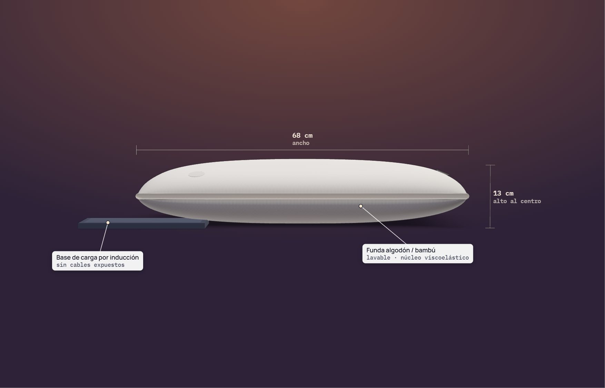
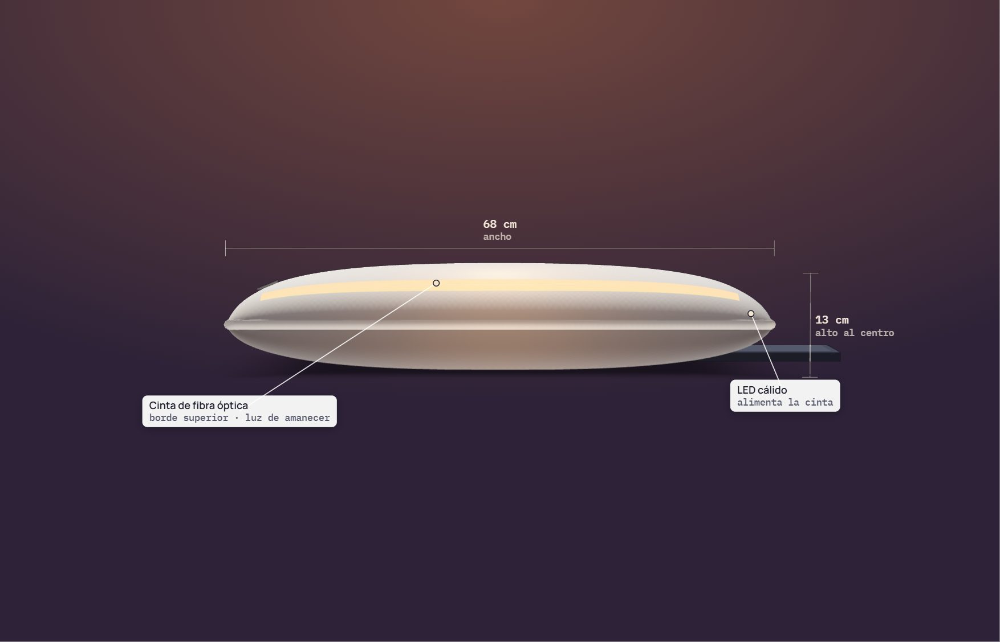
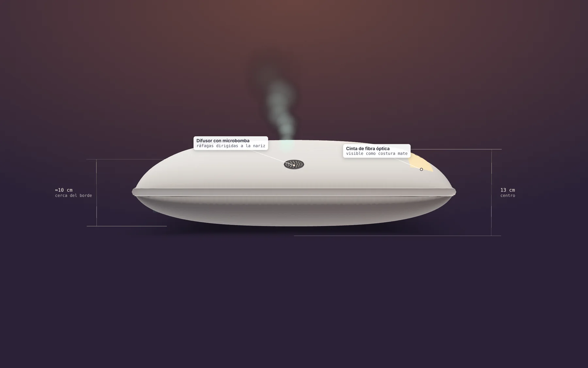
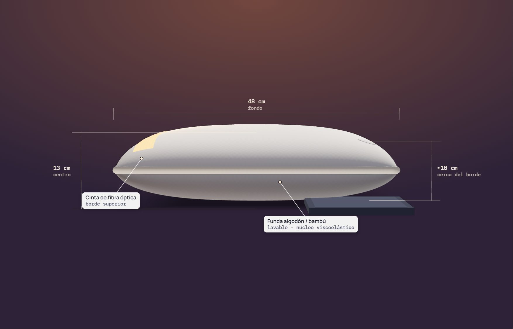
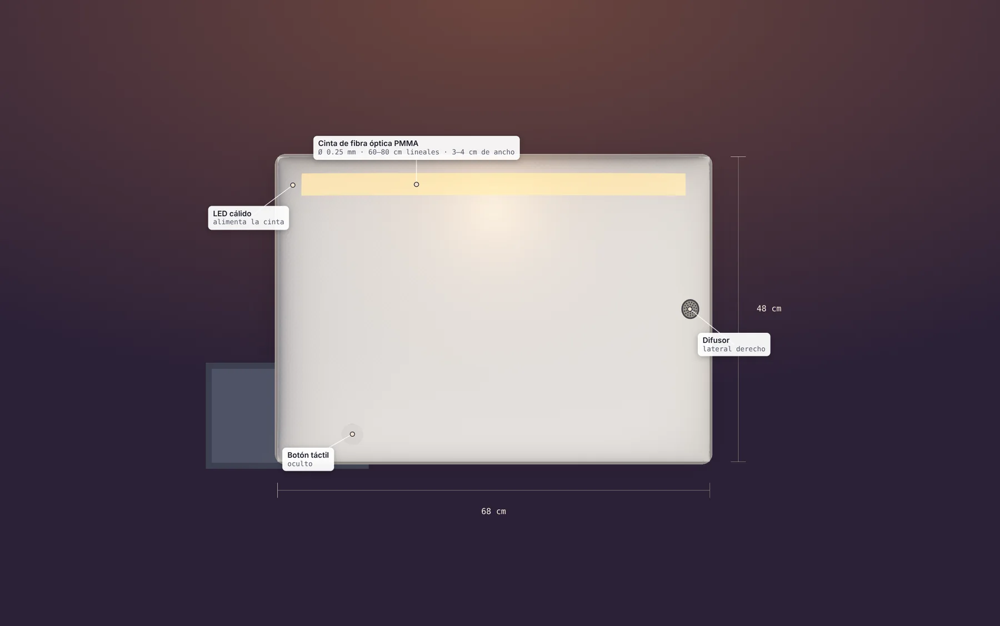
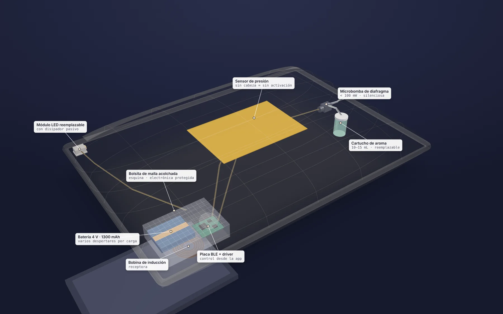
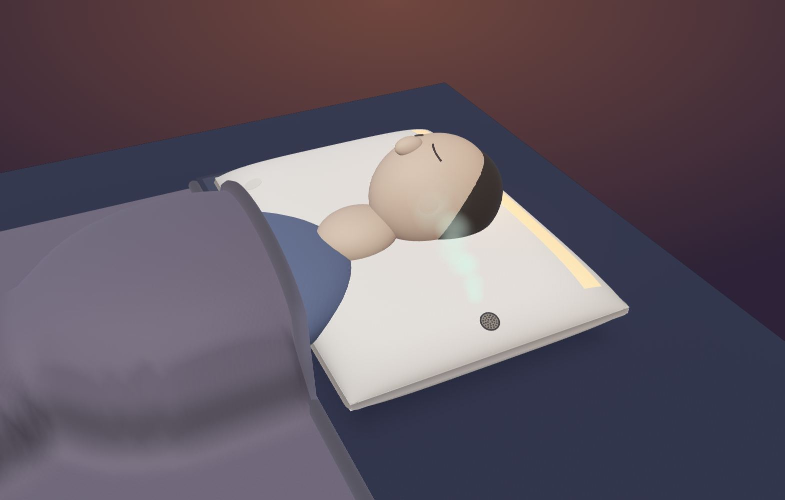
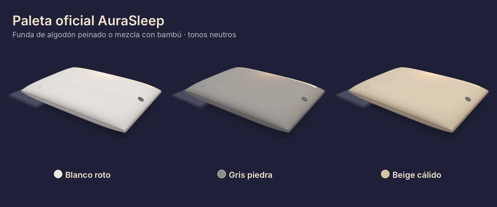
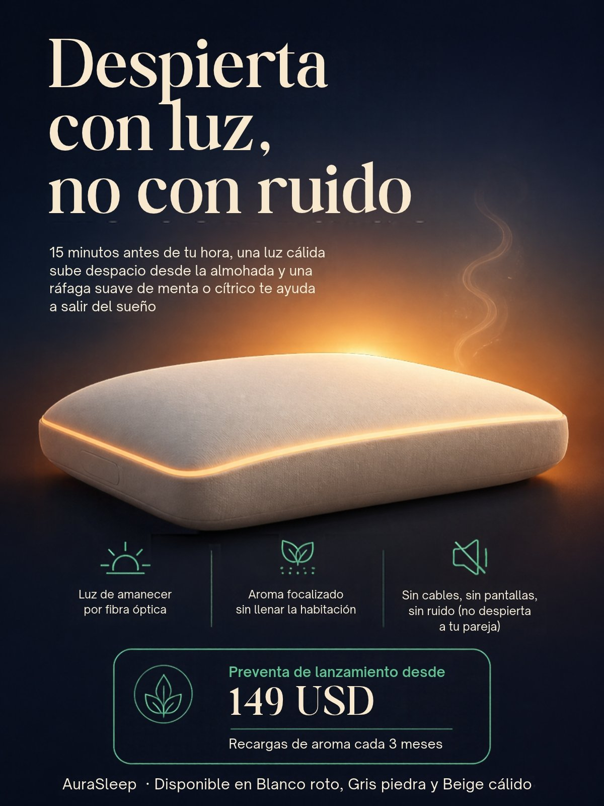
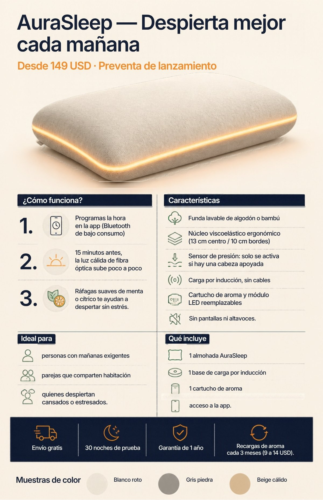

Investigación del producto · Documento de entrega final
Integrantes
Dante Lopez · Sebastian Saavedra · Carlos Prol · Sebastian Lavariega
Materia
Emprendimiento
Fecha
Noviembre de 2026
Contenido
Índice
#
Capítulo
Qué contiene
1
El artículo original: la almohada
Historia, quién y cuándo, innovaciones; análisis de características, funciones, materiales, usos, ventajas, desventajas y necesidades que atiende
2
Problema y oportunidad de mejora
Por qué la alarma sonora es un mal comienzo del día, a quién afecta y qué oportunidades deja
3
Innovación
Qué es AuraSleep, cómo funciona, modelo 3D con sus vistas, colores, materiales, medidas y ventaja competitiva
4
Viabilidad financiera
Costos, precio, márgenes, ingresos recurrentes y escenario de ventas
5
Presentación, publicidad y ligas
Presentación en Canva, póster, volante, sitio web y modelo 3D
6
Uso de inteligencia artificial
Qué herramientas se usaron, para qué y cómo se revisaron los resultados
Referencias
Fuentes consultadas
Este documento responde a las tres preguntas de la actividad “Un objeto cotidiano”: (1) qué objeto de uso diario elegimos, (2) cuál es su problemática, incluyendo cuándo se inventó, quién lo inventó y cuántas innovaciones ha tenido, y (3) cómo es nuestro producto, que innova lo existente. Al final se valida si el producto es viable y comercial.
Las cifras de costos y precios son hipotéticas y deben confirmarse con cotizaciones formales. Las referencias numeradas entre corchetes [n] aparecen al final del documento.
Capítulo 1
El artículo original: la almohada
Pasamos cerca de un tercio de la vida dormidos, y la almohada nos acompaña cada noche. Es uno de los objetos cotidianos más antiguos y, a la vez, uno de los que menos ha cambiado en su función: sostener la cabeza. Elegimos la almohada porque creemos que todavía puede facilitar la vida del usuario en un momento que hoy resolvemos mal: el despertar.
¿Cuándo fue inventada y quién la inventó?
La almohada no tiene un inventor único. Los primeros registros de su uso vienen de las civilizaciones de Mesopotamia, alrededor del 7000 a.C. [1]. En el antiguo Egipto se encontraron almohadas en las tumbas de los faraones; no eran suaves, sino soportes tallados en madera o piedra sobre los que descansaba la cabeza [2]. Además de dar comodidad, servían para mantener insectos lejos del cabello, la boca y los oídos [1].
El componente que hoy define a las almohadas ergonómicas sí tiene autor. En 1966, el ingeniero aeronáutico Charles Yost, contratado por la NASA a través de Stencel Aero Engineering, desarrolló una espuma de celdas abiertas con propiedades viscoelásticas para mejorar la seguridad de los asientos de avión: la espuma viscoelástica o memory foam[3]. Trabajó junto con el científico de la NASA Chiharu Kubokawa [5]. En 1969 Yost fundó Dynamic Systems para comercializarla [3], y en 1998 fue incluido en el Salón de la Fama de la Tecnología Espacial de la NASA [4].
¿Cuántas y cuáles han sido sus innovaciones?
Identificamos seis grandes innovaciones en la historia de la almohada. Las dos últimas no son almohadas, pero atacan el mismo problema que AuraSleep y son su antecedente directo.
Época
Innovación
Qué cambió
c. 7000 a.C.
Primeras almohadas rígidas (Mesopotamia, Egipto)
Soportes de piedra o madera para elevar la cabeza [1][2]
Grecia y Roma
Almohadas suaves rellenas
Pasan de soporte rígido a cojín relleno [1]
c. 1700
Uso generalizado en Europa
La almohada se vuelve un objeto común en el hogar [2]
1966
Espuma viscoelástica (Charles Yost, NASA)
Material que se adapta a la forma y reparte la presión [3]
Década de 2010
Almohadas inteligentes
Monitoreo del sueño, terapia antirronquidos, ajuste de altura [11]
2006 – 2014
Despertadores de luz y de aroma
Philips Wake-up Light simula el amanecer [6]; SensorWake despierta con aroma [8]
Análisis del artículo original
Antes de rediseñarla, analizamos la almohada convencional tal como se usa hoy en casa.
Qué es
Un soporte del cuerpo en reposo para comodidad, terapia o decoración; la pieza en la que se apoya la cabeza durante el sueño [17][2].
Función
Mantener recta la columna vertebral rellenando la concavidad del cuello, para relajar la nuca, evitar tensiones musculares y ayudar a conseguir un sueño agradable [17].
Usos y contexto
Se coloca sobre el colchón, en la parte superior de la cama, y se usa todas las noches. También hay almohadas decorativas (cojines), corporales y ortopédicas: cervicales, lumbares y de viaje en forma de U [17].
Características
El modelo estándar tiene tres piezas: un material interior blando, una funda interior cosida de algodón o fibra y una funda exterior que se retira para lavar [17][2]. Las medidas habituales van de 67 a 170 cm de largo, según el ancho de la cama [17].
Necesidades que atiende
Descanso, comodidad y soporte del cuello y la cabeza mientras se duerme [17][18].
Materiales
Relleno
Lo que ofrece
Su límite
Fibra (poliéster)
Son las más habituales [17]; accesibles y transpirables [2]
Ofrecen un apoyo bajo y, si son de mala calidad, se apelmazan al lavarlas [2]; pueden durar solo un año [18]
Pluma y plumón
Se moldean al cuello de cada persona [2]
Dan calor [2]
Látex
Se adapta a la forma y al peso de la cabeza [2]; puede durar hasta tres años [18]
—
Espuma viscoelástica
Se adapta a la forma y reparte la presión [3]
Se recomienda reemplazarla cada 2 a 3 años [18]
La funda interior suele ser de algodón o fibra [17].
Ventajas y desventajas
Ventajas
Desventajas y problemas detectados
Alinea la columna y relaja la nuca al dormir [17].
Hay rellenos para distintas necesidades y presupuestos; la fibra es accesible [2].
La funda exterior se retira y se lava [17].
Existen modelos ortopédicos para prevenir y mejorar dolores cervicales [2].
Acumula polvo y microbios entre el relleno; los ácaros anidan en las fibras sintéticas [17]. Una almohada vieja puede empeorar las alergias [18].
Pierde su forma: se recomienda cambiarla cada 2 a 4 años [17], o cada 1 a 2 años según otros especialistas [18].
Si ya no da el soporte adecuado, se despierta con el cuello adolorido [18].
Su reciclaje es caro; la mayoría acaba en vertederos [17].
Es un objeto pasivo: acompaña el sueño, pero no participa en el despertar (análisis del equipo).
Lo que nadie ha innovado todavía
Las almohadas han mejorado en comodidad y en medición del sueño, pero ninguna de las que encontramos se ocupa de cómo nos despierta. Esa tarea sigue a cargo de la alarma del celular. AuraSleep propone que la almohada, que ya está a centímetros de los ojos y de la nariz, sea la encargada de despertarnos de forma gradual.
Tipo de innovación: innova lo existente. No inventamos un objeto nuevo; integramos en la almohada dos tecnologías probadas en otros sectores (fibra óptica textil y microdifusión de aroma) para crear una experiencia nueva de despertar.
Capítulo 2
Problema y oportunidad de mejora
La mayoría de las personas se despierta con una alarma sonora. El sonido corta el sueño de golpe, aunque estemos en una fase profunda, y el cuerpo responde como ante un sobresalto. El resultado es un despertar con cansancio, irritabilidad y una sensación de “cabeza pesada” que puede durar varios minutos.
Tres efectos de la alarma ruidosa
Despertar abrupto. El sonido interrumpe el sueño sin transición. Despertar desde el sueño profundo deja más torpeza y confusión, lo que se conoce como inercia del sueño; en su forma más marcada se llama despertar confusional.
Pico de estrés. El sobresalto activa la respuesta de estrés justo al iniciar el día. La investigación sobre amanecer artificial ha estudiado su efecto en la inercia del sueño y en la respuesta del cortisol al despertar [15].
Despierta a quien no lo necesita. En parejas o cuartos compartidos, la alarma de una persona interrumpe el sueño de la otra.
Evidencia de que hay una alternativa mejor
Estímulo
Qué dice la evidencia
Fuente
Luz que simula el amanecer
Philips reporta que el 92 % de los usuarios de su Wake-up Light encuentra más fácil levantarse (estudio Metrixlab 2011, 209 personas).
[6][7]
Aroma al despertar
En pruebas propias, SensorWake reportó que su alarma de aroma despertó al 99 % de las personas en dos minutos. Es un dato del fabricante; otros estudios sobre aromas como despertador han sido menos positivos.
[8][9]
Menta y estrés
Toda y Morimoto observaron reducciones significativas del cortisol en saliva al exponer a participantes al aroma de menta.
[10]
Por eso AuraSleep combina ambos estímulos: la luz prepara al cuerpo para despertar y el aroma ayuda a completar la transición. La hipótesis que debemos comprobar con pruebas en personas es que juntos funcionan mejor que cada uno por separado.
Oportunidades de mejora
El despertar. La almohada no participa en él; hoy lo resuelve una alarma sonora.
Integración. Las lámparas de amanecer y los despertadores de aroma son aparatos aparte que ocupan la mesita de noche; la almohada ya está junto a los ojos y la nariz.
Mantenimiento. La almohada convencional se desecha completa; una funda lavable y módulos reemplazables alargan su uso.
¿A quién le afecta? Público objetivo
Capa
Quiénes son
Por qué les sirve AuraSleep
Usuario principal
Adultos de 22 a 45 años con vida urbana y trabajo o estudios exigentes que ya invierten en bienestar; parejas que comparten habitación.
Su rendimiento por la mañana depende de cómo despiertan; la alarma silenciosa no despierta a la pareja.
Segundo grupo
Personas con estrés matutino, cansancio al despertar o despertar confusional; usuarios de lámparas de amanecer.
No exige disciplina ni cambios de rutina: solo programar la hora. Integra la luz en la cama, sin ocupar la mesita.
Canales a mediano plazo
Hoteles boutique, clínicas del sueño, coworkings con zonas de descanso, programas de bienestar corporativo.
Experiencia diferenciadora para huéspedes, pacientes y empleados; compras por volumen.
Capítulo 3
Innovación
AuraSleep es una almohada que funciona como un sistema: sustituye la alarma sonora por un despertar secuencial y multisensorial de 15 minutos. Trabaja de forma no invasiva sobre dos vías sensoriales: la vía visual indirecta (luz que atraviesa los párpados cerrados) y la vía olfativa (aroma dirigido a la nariz).
Figura 1. Modelo 3D de AuraSleep en perspectiva, con la luz de amanecer encendida.
¿Cómo funciona?
Luz. En el borde superior de la funda hay una cinta textil con fibras ópticas de 0.25 mm, alimentada por un pequeño LED de tono cálido. Unos 15 minutos antes de la hora programada, la luz sube despacio hasta un brillo tenue que atraviesa los párpados y le indica al cerebro que reduzca la melatonina.
Aroma. En un lateral, a la altura de la nariz, un difusor del tamaño de una moneda con una microbomba silenciosa libera ráfagas cortas de menta o cítrico, dirigidas a la nariz y sin llenar la habitación.
Control. Se programa la hora en una app por Bluetooth de bajo consumo. También hay un botón táctil capacitivo oculto bajo el textil.
Ahorro de energía. Un sensor de presión en la espuma solo activa el sistema si hay una cabeza apoyada.
Energía. Batería de 4 V y 1200-1500 mAh para varios despertares por carga, recargada por inducción: sin cables ni conectores expuestos.
Mantenimiento. Funda exterior lavable; el cartucho de aroma y el módulo LED son reemplazables.
Secuencia del despertar
Minuto
Luz (fibra óptica)
Aroma (difusor)
−15
Empieza a encenderse, muy tenue
—
−10 a −5
Sube de intensidad de forma gradual
Primeras ráfagas cortas de menta o cítrico
−5 a 0
Brillo tenue tipo amanecer
Ráfagas más frecuentes
Hora
Luz estable
Última ráfaga; el usuario despierta
La calibración exacta (cuánta luz, cuánto aroma y cada cuánto) se ajusta según el perfil del usuario y debe definirse con pruebas en personas.
Modelo 3D: las vistas
Construimos un modelo 3D digital interactivo que se puede girar, cambiar de color y en el que se puede simular el despertar. Muestra las vistas frontal, posterior, lateral derecha, lateral izquierda y superior, además de una vista interna y una vista en uso.

Figura 2. Vista frontal: ancho de 68 cm, alto de 13 cm al centro y la base de carga por inducción.

Figura 3. Vista posterior: el borde superior con la cinta de fibra óptica y el LED cálido que la alimenta.

Figura 4. Vista lateral derecha: el difusor de aroma tamaño moneda y el perfil ergonómico de 13 cm al centro y unos 10 cm cerca de los bordes.

Figura 5. Vista lateral izquierda: el lado opuesto al difusor y el fondo de 48 cm.

Figura 6. Vista superior: la cinta de fibra óptica en el borde superior (60-80 cm lineales, 3-4 cm de ancho) y las medidas de 68 × 48 cm.

Figura 7. Vista interna (rayos X): batería, placa BLE, bobina de inducción, sensor de presión, cartucho, microbomba y módulo LED dentro de una bolsita de malla acolchada.

Figura 8. En uso: la luz llega a los párpados cerrados y el difusor dirige el aroma hacia la nariz. La figura es genérica, solo de referencia.

Figura 9. Paleta oficial: Blanco roto, Gris piedra y Beige cálido.
Ficha técnica: materiales y medidas
Elemento
Especificación
Medidas y peso
48 × 68 cm · perfil de 13 cm al centro y 10 cm en los bordes · 0.9 a 1.1 kg
Funda
Algodón peinado o mezcla con bambú, lavable; colores Blanco roto, Gris piedra y Beige cálido
Núcleo
Espuma viscoelástica de densidad media con la electrónica protegida
Luz
Cinta textil de fibra óptica PMMA de 0.25 mm + LED cálido con disipador pasivo
Aroma
Microbomba de diafragma de menos de 100 mW + cartucho de 10-15 mL de aceite de grado cosmético
Electrónica
Bluetooth de bajo consumo, sensor de presión, gestión de batería, botón táctil capacitivo oculto
Energía
Batería de 4 V y 1200-1500 mAh · carga por inducción
Sin
Pantallas, altavoces ni cables expuestos
Ventaja competitiva
Las piezas de AuraSleep ya existen en otros sectores. Lo innovador es la unión híbrida: un sistema que despierta con luz y aroma en una secuencia calibrada, dentro de la propia almohada.
Solución actual
Qué hace
Qué le falta
Lámparas de amanecer (Philips Wake-up Light, desde 2006)
Simulan el amanecer con luz [6]
Solo luz; ocupan la mesita de noche
Despertadores de aroma (SensorWake, 2014)
Liberan un aroma a la hora de la alarma [8]
Solo aroma; es un aparato aparte
Almohadas inteligentes actuales
Monitorean el sueño, reducen ronquidos o ajustan la altura [11]
No se encargan del despertar
AuraSleep
Luz de amanecer + aroma focalizado en la misma secuencia, dentro de la almohada
—
Difícil de copiar: la ventaja real no está en comprar las piezas, sino en calibrar la secuencia (intensidad de luz, cantidad de aroma, frecuencia y distancia al rostro) según el perfil de cada usuario. Eso exige pruebas con personas y datos acumulados.
Ingresos recurrentes: los cartuchos de aroma recargables generan ventas cada trimestre, no solo la venta única de la almohada.
Integración: el usuario no compra ni acomoda otro aparato; solo programa la hora.
En la búsqueda que realizamos no encontramos un producto comercial que combine luz de amanecer y aroma focalizado dentro de la almohada. Antes de lanzar habría que hacer una búsqueda formal de patentes, porque sí existen patentes de aromaterapia textil y de textiles con fibra óptica para fototerapia.
Capítulo 4
Viabilidad financiera
Estructura de costo unitario
Componente
Especificación
USD
Núcleo de espuma viscoelástica
Densidad media, 48 × 68 × 13 cm
8-12
Funda externa
Algodón 300 hilos con bolsillos técnicos y cierres
6-9
Tejido de fibra óptica
60-80 cm lineales de fibra PMMA tratada, cosida
7-10
Módulo LED + disipador pasivo
LED cálido de alta eficiencia, lente difusora
3-5
Microbomba eléctrica + driver
Bomba de diafragma miniaturizada, menos de 100 mW
12-18
Cartucho de aroma (primer llenado)
10-15 mL de aceite esencial de grado cosmético
2-4
Electrónica de control
Sensor de presión, gestión de batería
8-12
Batería 4 V / 1300 mAh
Con circuito de carga por inducción
6-9
Base de carga por inducción
Bobina receptora y transmisora
4-6
Empaque, manual y logística inversa inicial
Caja rígida, espuma de protección, insertos
5-8
Costo unitario directo
61-93
A este costo directo se suman costos indirectos de fabricación, control de calidad y certificación, lo que lleva el costo total por unidad a unos 75-100 USD.
Precio de venta y margen
AuraSleep se posiciona en el segmento premium accesible: por encima de una almohada ergonómica convencional y por debajo de las almohadas inteligentes de gama alta. Las fuentes de mercado difieren en el precio de referencia: algunas ubican las almohadas inteligentes en Estados Unidos entre 200 y 600 USD [14] y otras reportan un precio medio cercano a 420 USD para las de monitoreo del sueño [13]. Un precio de lanzamiento de 149-179 USD queda claramente por debajo de esos rangos.
Escenario
Costo total
Precio
Margen bruto
Pesimista
100 USD
149 USD
32.9 %
Medio
87.5 USD
164 USD
46.6 %
Medio (solo costo directo)
77 USD
164 USD
53.0 %
Optimista
75 USD
179 USD
58.1 %
En el escenario medio el margen bruto queda entre 45 % y 55 %, suficiente para absorber distribución, marketing y garantía. Margen bruto = (precio − costo) ÷ precio.
Modelo de ingresos recurrentes: cartuchos de aroma
Cada cliente necesita un cartucho nuevo de aroma cada tres meses, a 9-14 USD. Eso suma 36-56 USD por cliente al año sin subir el precio de entrada de la almohada. Con un costo de 2-4 USD por cartucho, el margen por recarga va de 56 % a 86 %. En dos años de uso, un cliente aporta entre 72 y 112 USD adicionales a la compra inicial.
Escenario ilustrativo de ventas (primeros 3 años)
Como se espera vender pocas unidades al lanzamiento y crecer cuando el producto se vuelva conocido, armamos un escenario de crecimiento gradual. Supuestos: precio de 164 USD, costo total de 87.5 USD, cartucho a 11.5 USD con costo de 3 USD, 70 % de los clientes compra recargas (4 al año; los clientes nuevos, 2 en su primer año).
Año
Almohadas vendidas
Cartuchos vendidos
Ingreso almohadas
Ingreso cartuchos
Ingreso total
Utilidad bruta
1
300
420
49,200
4,830
54,030
26,520
2
1,200
2,520
196,800
28,980
225,780
113,220
3
3,000
8,400
492,000
96,600
588,600
300,900
Cifras en USD. Es un escenario de ejemplo, no un pronóstico. La parte de los cartuchos pasa de 9 % del ingreso en el año 1 a 16 % en el año 3: el modelo recurrente gana peso conforme crece la base de clientes.
Mercado
El mercado de almohadas inteligentes crece a doble dígito, aunque los estudios difieren mucho en el tamaño: uno proyecta un aumento de 941.7 millones de USD entre 2024 y 2029 con un crecimiento anual de 21.1 % [11]; otro estima 591.5 millones de USD en 2025 y 1,900 millones en 2032, con 18 % anual [12]. Las cifras deben tomarse como orden de magnitud.
Riesgos y próximos pasos
Calibración con personas: probar intensidades de luz y aroma con usuarios reales antes de producir.
Seguridad y certificación: batería y carga por inducción dentro de un textil, y aromas cerca del rostro (posibles alergias o sensibilidad).
Cotizaciones formales: validar con proveedores los costos de fibra óptica, microbomba y electrónica.
Propiedad intelectual: búsqueda formal de patentes de aromaterapia textil y fibra óptica para fototerapia.
Conclusión: ¿es viable? Sí: usa componentes que ya existen y su costo total queda claramente debajo del precio de venta. ¿Es comercial? Sí: precio competitivo frente al mercado, público definido y un ingreso recurrente por cartuchos.
Capítulo 5
Presentación, publicidad y ligas
La presentación de venta y el material publicitario están en Canva. El sitio web reúne todo el proyecto: la presentación incrustada, el modelo 3D interactivo y este documento.
Innovadora, viable y comercial · preventa desde 149 USD
Material publicitario

Figura 10. Póster: nombre del producto, imagen destacada, eslogan y beneficios principales.

Figura 11. Volante: imagen, cómo funciona, características, para quién es, qué incluye y precio propuesto.
El precio y las condiciones que aparecen en el póster y el volante son hipotéticos, igual que el resto de las cifras del proyecto. AuraSleep es un concepto escolar: no se vende ni se cobra.
Capítulo 6
Uso de inteligencia artificial
En el proyecto usamos herramientas de inteligencia artificial como apoyo. Las decisiones y la revisión final fueron del equipo.
Herramienta
Para qué se usó
Cómo se revisó
Claude (Anthropic), con Claude Code
Apoyo para ordenar la investigación y redactar este documento; programación del modelo 3D interactivo y del sitio web.
Se comprobó que las ligas de las fuentes abrieran y que las cifras del sitio y del documento coincidieran. El sitio se probó en computadora y en celular.
Canva, con su conector para asistentes de IA
Armado de la presentación, el póster y el volante a partir de los textos de la investigación.
El equipo ajustó los diseños y verificó que las ligas abrieran sin iniciar sesión.
Criterio propio
El equipo definió qué debía decir cada material y no permitió cambiar cifras ni agregar datos sin fuente.
Se pidieron correcciones a los resultados: imágenes que desentonaban, tipografía, colores y la posición del producto en la portada del sitio.
No se usaron testimonios ni reseñas inventadas, y no se hacen promesas médicas.
Las cifras de costos y precios siguen siendo hipotéticas y deben confirmarse con cotizaciones formales.